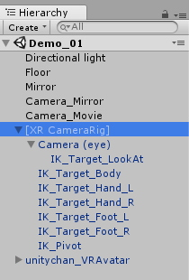
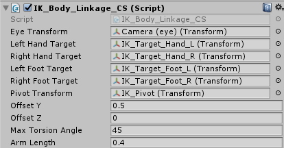
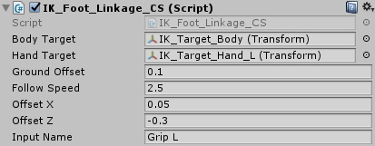
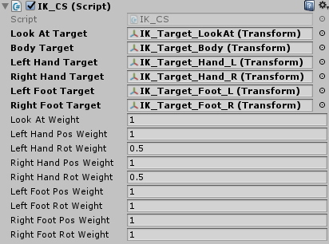
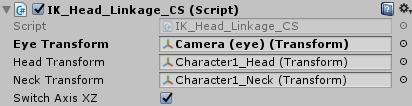

XR Mecanim IK Plus
[警告と免責事項]
VRコンテンツのため、対象年齢は13歳以上とします。VR機器の取扱説明書に従い、安全に配慮して利用してください。
このソフトウェアを使用したことによって、いかなる損害が発生しても、製作者は一切の責任を負わないものとします。各自の責任においてご使用ください。
[概要]
Unityの標準機能であるMecanimのIKを使用して、VR空間でアバターをそれっぽく動かすための仕組みです。
女の子に変身して鏡の前でウフフキャハハしたり、バーチャルYouTuberっぽい事ができます。
Unity2017.2で製作しています。それ以前のバージョンではスクリプト内のXRをVRに書き換える必要があります。
VIVEで製作しましたが、おそらくOculus Riftでも動くかと思います。Win MRはちょっと判らないです(汗)
MecanimのIKをいくつかの簡単なスクリプトで補完しているだけですので、必要に応じて改造して使用して下さい。
足の動きはハンドコントローラーを使用したギコチナイものですので、オマケ程度にお考え下さい。
VIVEトラッカーを使用して改造すれば、より自然に動けるかもしれません。
[インポート方法]
新しいプロジェクトを作り、"XR_MecanimIKPlus.unitypackage"をインポートします。
ハンドコントローラーの入力に必要な情報と、XRの設定を下記の手順で上書きします。
ファイルブラウザを使用してプロジェクト内の"SettingFiles.zip"を解凍し、"InputManager.asset"と"ProjectSettings.asset"をコピー。
プロジェクト名 >> Assets >> XR_MecanimIKPlus
>> SettingFiles.zip
プロジェクト内の"ProjectSettings"フォルダを見つけてペースト・上書き。
プロジェクト名 >> "ProjectSettings"
デモシーンを動かすためには、ユニティちゃんの公式モデルパッケージが必要です。
下記のページにてライセンス条項をよく読んだ上で「ユニティちゃん
3Dモデルデータ」をダウンロードして、このプロジェクトにインポートして下さい。(2017.12.31現在 Ver.1.2.1)
http://unity-chan.com/contents/guideline/
[使い方]
まずはデモシーン"Demo_01"を開いて遊んでみて下さい。
着席モード"TrackingSpaceType.Stationary"がスクリプト内で設定されています。
[VIVEコントローラー]
右手メニューボタン >> 位置リセット
左手メニューボタン >> シーンリセット
左右グリップボタン >> 足の連動
[Oculus Touch]
Aボタン >> 位置リセット
Xボタン >> シーンリセット
左右グリップボタン >> 足の連動
胴体の位置は、左右の足の中心が基準になります。
胴体の角度Y軸は、左右の足の角度と両手の位置が基準になります。
[Tips]
足を上げるときは、なるべくコントローラーを水平に保ちましょう。
[各部の説明]

"[XR CameraRig]"
VR用のカメラと手、そしてIKのためのターゲットが含まれています。
アバターの目の高さに合わせておくと設定が楽になります。
アタッチされているスクリプト"XR_Basic_Function_CS"は、着席モードの指定、位置リセット、シーンリセットを実行します。
"Camera (Eye)"
VR用のカメラです。
初期位置のままでOK。
"IK_Target_LookAt"
MecanimのIKが頭部をコントロールするために必要なターゲットです。
初期位置のままでOK。
"IK_Target_Body"
MecanimのIKが胴体をコントロールするために必要なターゲットです。
初期位置のままでOK。
アタッチされているスクリプト"IK_Body_Linkage_CS"が、頭・手・足の位置・角度を読み取ってこのオブジェクトを制御します。

'Eye Transform'
同ヒエラルキー内の"Camera (Eye)"を入れて下さい。
初期設定のままでOK。
'Left Hand Target'
'Right Hand Target'
同ヒエラルキー内の"IK_Target_Hand_L"または"IK_Target_Hand_R"を入れて下さい。
初期設定のままでOK。
'Left Foot Target'
'Right Foot Target'
同ヒエラルキー内の"IK_Target_Foot_L"または"IK_Target_Foot_R"を入れて下さい。
初期設定のままでOK。
'Pivot Transform'
同ヒエラルキー内の"IK_Pivot"を入れて下さい。
初期設定のままでOK。
'Offset Y'
目(カメラ)から胴体までのおおよその距離を入力してください。
カメラとアバターの目の高さが一致しない場合に調整します。
'Offset Z'
アバターがへっぴり腰になりやすい時に調整して下さい。
'Max Torsion Angle'
手の位置に連動して胴体をひねる時の最大角度を設定します。
'Arm Length'
手の位置に連動して胴体をひねる際に利用される値です。
おおよその腕の長さの半分を入力してください。
"IK_Target_Hand_L"
"IK_Target_Hand_R"
MecanimのIKが手をコントロールするために必要なターゲットです。
ハンドコントローラーの位置・角度をトラッキングするためのスクリプトが付いています。
初期位置・初期設定のままでOK。
"IK_Target_Foot_L"
"IK_Target_Foot_R"
MecanimのIKが足をコントロールするために必要なターゲットです。
足の初期位置になるので、地面より少し浮かせてセットして下さい。

'Body Target'
同ヒエラルキー内の"IK_Target_Body"を入れて下さい。
初期設定のままでOK。
'Hand Target'
同ヒエラルキー内の"IK_Target_Hand_L"または"IK_Target_Hand_R"を入れて下さい。
初期設定のままでOK。
'Ground Offset'
足が地面にめり込んでしまう場合に調整します。
'Follow Speed'
足の追従スピードを調整できます。
'Offset X'
ハンドコントローラーの位置に対して、どのていど左右方向にずらすかを調整できます。
'Offset Z'
ハンドコントローラーの位置に対して、どのていど前後方向にずらすかを調整できます。
'Input Name'
使用するトリガーのInputManager内での名前を入力します。
Input.GetAxisを使用しているため、ボタンを使用する場合はスクリプトを改造する必要があります。
"IK_Pivot"
胴体の位置・角度を算出するために使用されるオブジェクトです。
初期位置のままでOK。
"unitychan_VRAvatar"
必要なスクリプトをセットしたユニティちゃんのアバターです。
AnimatorにはIKの設定をしただけの空っぽのAnimatorControllerが設定してあります。必要に応じて変更してください。
二つのスクリプト"IK_CS"と"IK_Head_Linkage_CS"が追加されています。
"IK_CS"はMecanimのIKを動かすための基本的なスクリプトです。
それぞれに対応するIKのターゲットをドラッグ&ドロップして下さい。
ユニティちゃんの手が袖にめり込みやすいので、手の回転ウェイトを0.5にしてありますがお好みで変更してください。

"IK_Head_Linkage_CS"は頭と首の回転を制御するためのスクリプトです。
MecanimのIKでは首をかしげる動作が出来ないため、これで補完しています。

'Eye Transform'
"[XR CameraRig]"内にある"Camera (eye)"を入れて下さい。
''Head Transform"
アバターのHeadボーンに相当するゲームオブジェクトをドラッグ&ドロップして下さい。
"Neck Transform"
アバターのNeckボーンに相当するゲームオブジェクトをドラッグ&ドロップして下さい。
"Switch Axis XZ"
首の回転系が異なる場合に切り替えて使用します。
ユニティちゃんモデルでは有効にする必要がありますが、他の多くのモデルでは無効にして下さい。